Parklife Café is the new coffee making , pastry baking, dog welcoming, place to be in Crumlin Dublin. Supported by Dublin based CloudPickerCoffee, we have a wide range of delicious coffee. We also serve freshly made breakfast and lunch, with locally sourced high quality ingredients.
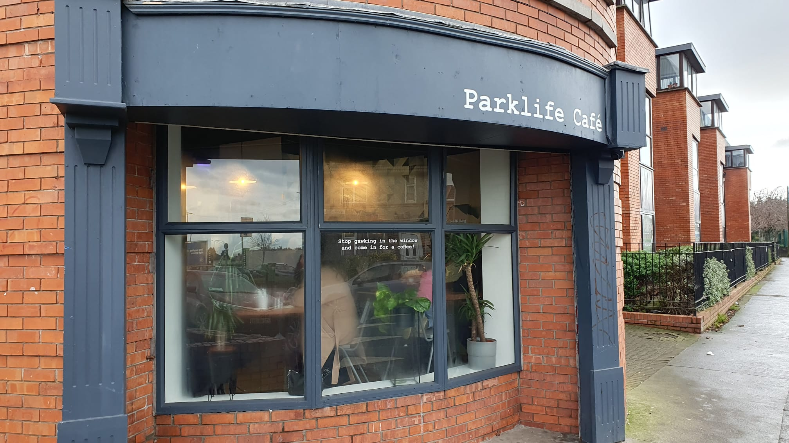
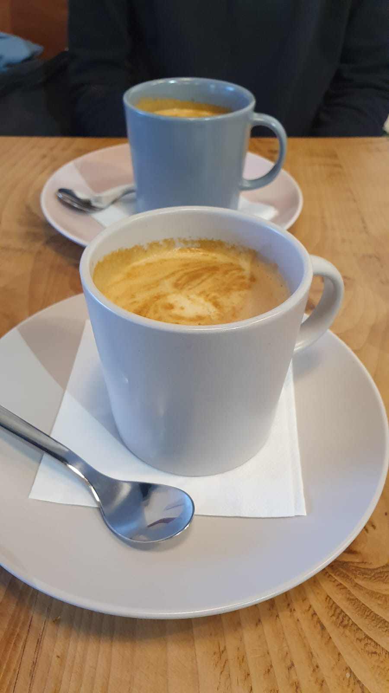
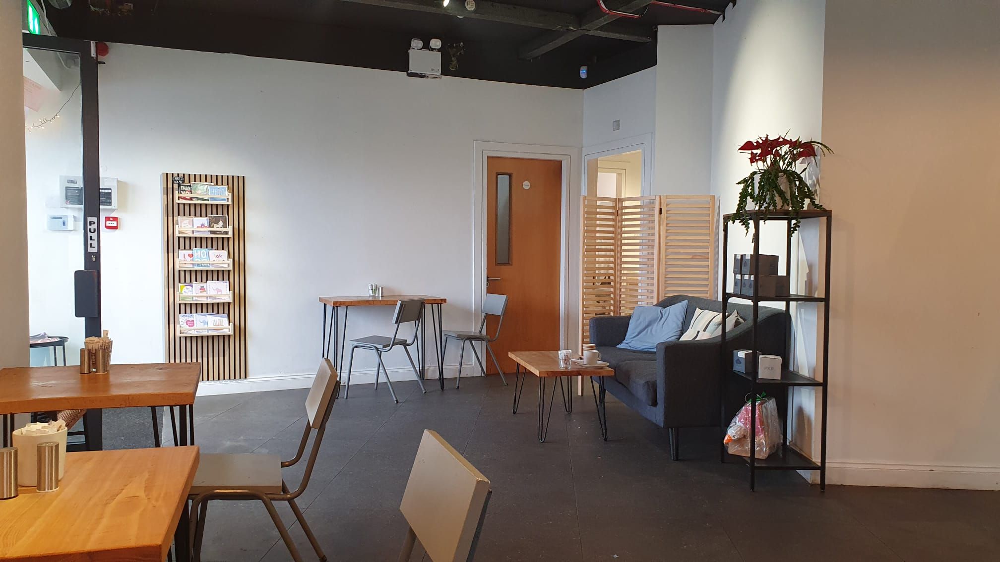
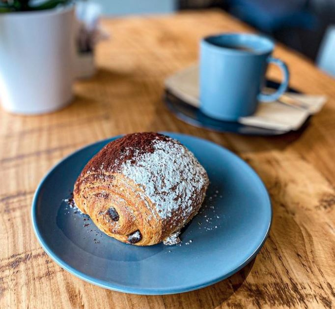
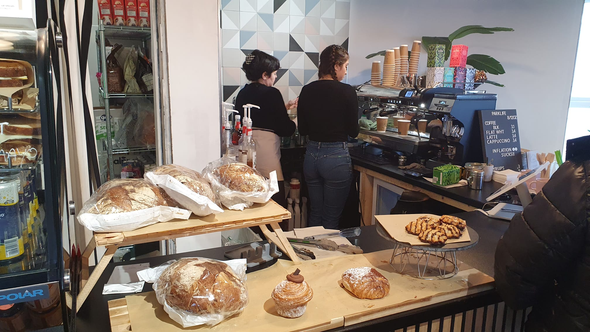
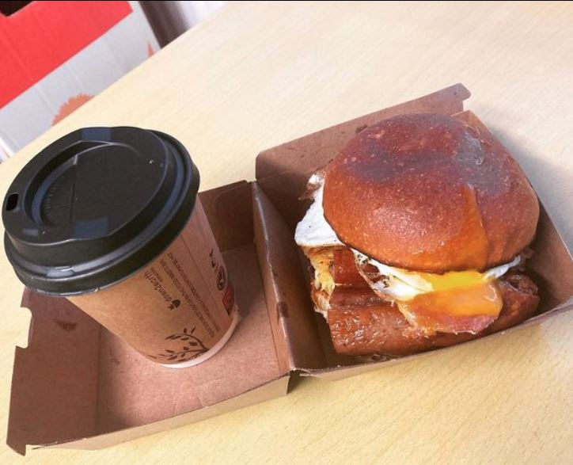
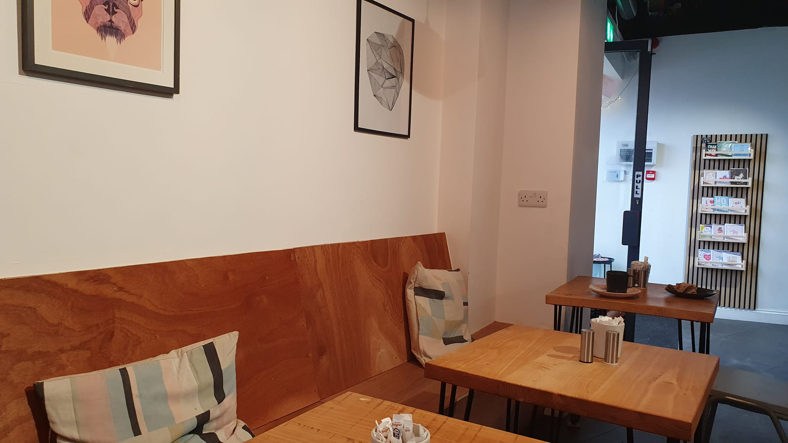
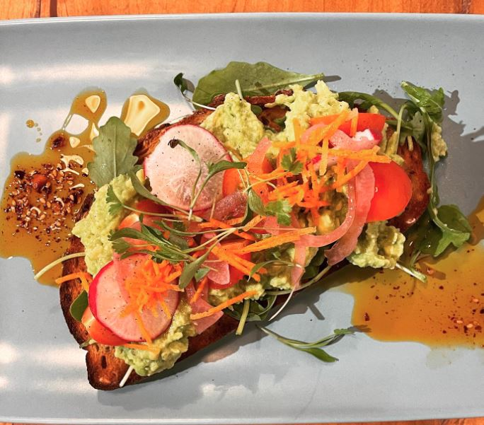
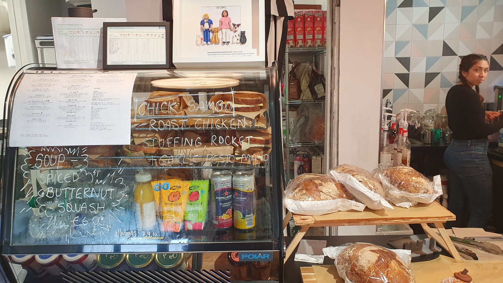
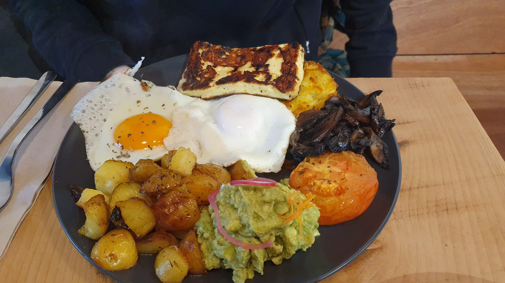
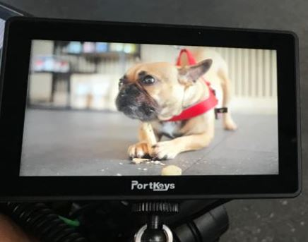
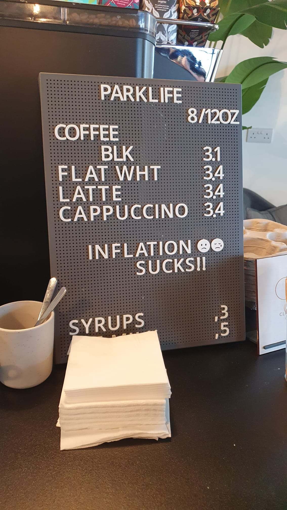
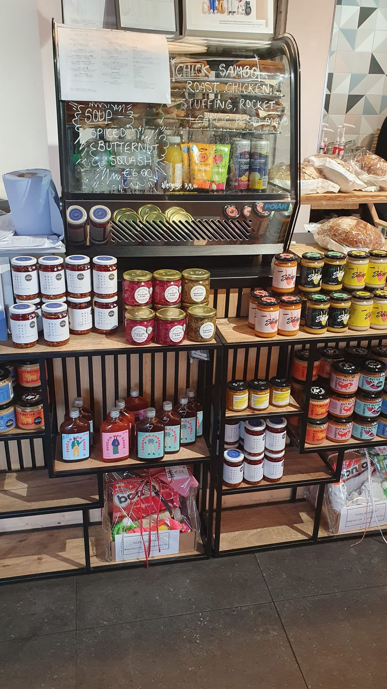
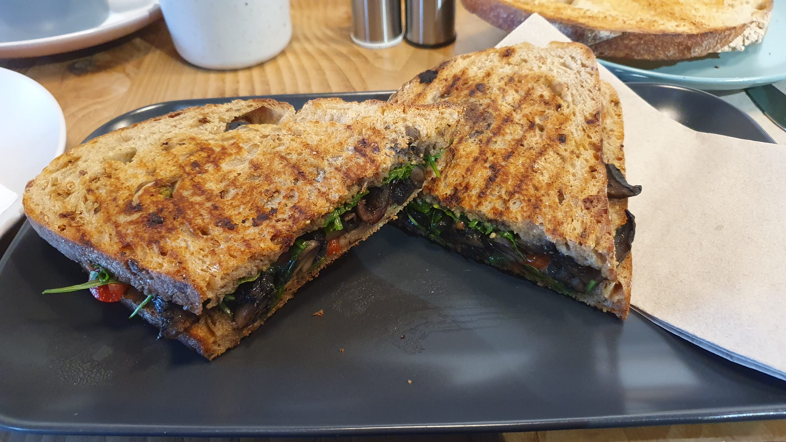
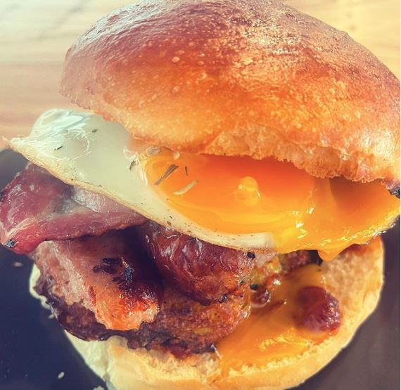
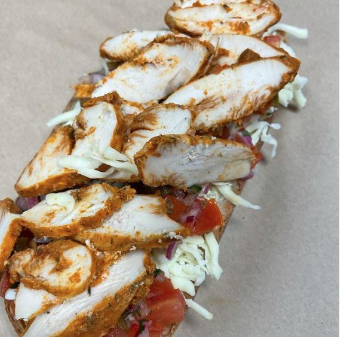
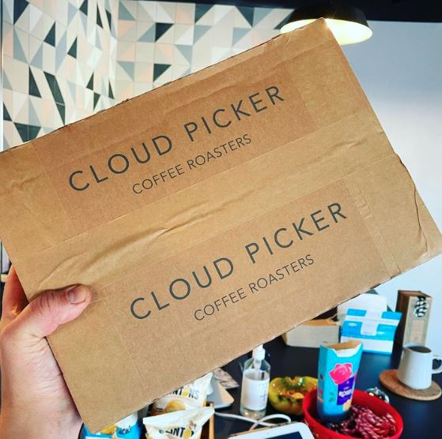
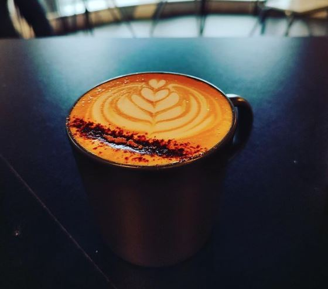
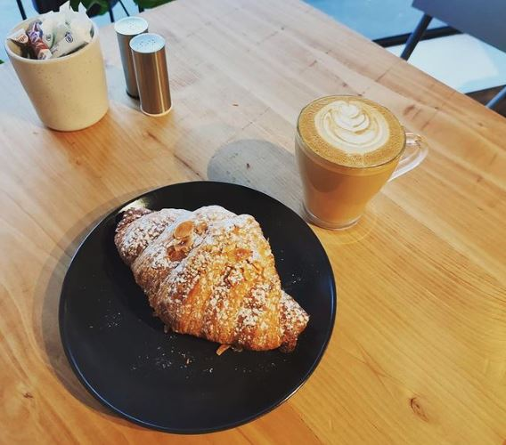
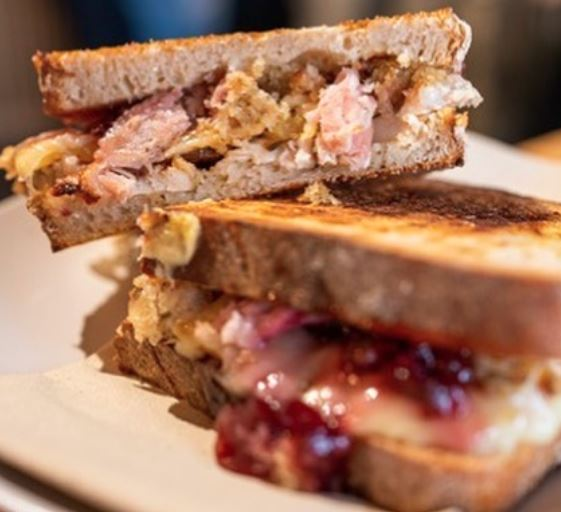